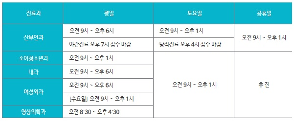

이화병원
병원소개
인사말
연혁
병동소개
오시는길
진료안내
진료과
절차안내
당직일정표
증명서발급
진료상담
여성케어센터
산부인과
여성성형&케어
여성암케어
산후조리원
건강검진센터
국민건강보험공단검진
5대암검진
기타검진
이화문화센터
이화맘생생스쿨
여성운동센터
문화센터수강신청
고객참여
이화소식
건강정보
진료과
소아과
소아과 소개
예방접종
성장발달
신행아질환
전문의
내과
내과 소개
질환정보
위내시경
대장내시경
전문의
영상의학과
영상의학과 소개
초음파클리닉
복부초음파
전문의
유방/갑상선외과
유방/갑상선외과 소개
유방
갑상선
대장/항문
전문의
